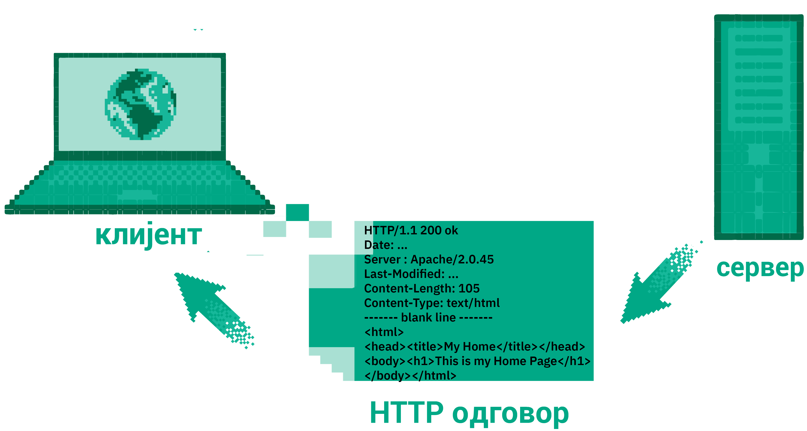

Протокол HTTP¶

Већ смо видели да се размена информација између клијената и сервера на вебу врши помоћу протокола HTTP (енгл. HyperText Transfer Protocol) или HTTPS (енгл. HyperText Transfer Protocol Secure), који пружа додатну сигурност јер податке шаље преко мреже у криптованом (шифрованом) облику.
Када се у прегледач веба унесе веб-адреса, односно URL, или се просто кликне на неку везу, прегледач најпре рашчлањује адресу на њене саставне делове. На пример, ако је URL адреса http://www.moja-prodavnica.com/site/products?page=3, њени делови су:
http– ознака протокола који се користи за комуникацију,www.moja-prodavnica.com– назив веб-сервера,/site/products– путања до веб-стране на серверу иpage=3– додатни параметри.
На основу овога, веб-прегледач зна да помоћу протокола HTTP треба да успостави комуникацију са веб-сервером www.moja-prodavnica.com.
Први корак је прибављање IP адресе тог веб-сервера слањем упита серверу имена домена (DNS). Након тога, веб-серверу се шаље такозвани
HTTP захтев с путањом до стране која се захтева (у овом примеру то је /site/products) и евентуално са неким додатним параметрима,
ако су наведени. У нашем примеру, додатни параметар је page=3, коју ће веб-сервер очигледно да протумачи као захтев да пошаље
трећу страну списка производа.
{kind=link}
Сервер проверава да ли постоји тражена веб-страна тј. да ли постоји скрипт који може да је генерише и, ако постоји, шаље је клијенту у склопу HTTP одговора. Клијент (тј. веб-прегледач) затим анализира HTML опис стране коју је добио, приказује је и, ако се у опису спомиње слика, аудио-запис или видео-снимак, шаљу се нови HTTP захтеви за тим ресурсима. Зато на споријим везама можете приметити да се прво учитава и приказује текст веб-стране, а тек касније стижу слике.
{kind=link}
Ако веб-сервер не може да пружи захтевану страну, HTTP одговор садржи информацију о томе. Наиме, сваки HTTP одговор садржи статус, који клијента информише о исходу његовог захтева.
Праћење HTTP комуникације из прегледача¶
Савремени прегледачи, као што је Chrome, пружају програмерима могућност да детаљно испрате све HTTP захтеве и HTTP одговоре које
прегледач шаље и прима. То се ради у склопу конзоле за веб-програмере (енгл. web developer console). Она се обично може укључити
пречицом F12 или пречицом Ctrl + Shift + j на тастатури. HTTP комуникација се може испратити на картици Network.
У прегледачу може и да се изабере Developer tools са менија.
{kind=link}
Прикажимо како HTTP комуникација функционише на примеру дохватања првог веб-сајта који је икад направљен. веб-је настао у истраживачком центру CERN у Швајцарској (његов творац је Тим Бернерс Ли) и први веб-сајт је и даље доступан на сајту CERN-а, на адреси http://info.cern.ch/hypertext/WWW/TheProject.html.
{kind=link}
На слици која следи је приказана комуникација приликом захтева за страном http://info.cern.ch/hypertext/WWW/TheProject.html. Обратите пажњу да се види захтевани URL и метода:
Request URL: http://info.cern.ch/hypertext/WWW/TheProject.html
Request Method: GET
Приказан је и статус одговора 200 OK, који је један од могућих статуса када је захтев успешно обрађен.
{kind=link}
Откако прегледачи нуде могућност детаљног прегледа HTTP комуникације, командна линија се све мање користи у ову сврху. Ми ћемо је, међутим, у наставку текста употребити да мало детаљније објаснимо HTTP комуникацију.
Коришћење протокола HTTP из командне линије¶
Прођимо кроз кораке у HTTP комуникацији на примеру дохватања првог веб-сајта на адреси http://info.cern.ch/hypertext/WWW/TheProject.html.
Прва ствар коју треба да урадимо је да отворимо HTTP конекцију ка серверу info.cern.ch. То можемо урадити коришћењем апликације
telnet. У командној линији можемо откуцати:
telnet info.cern.ch 80
Број 80 је ознака порта (80 се традиционално користи као порт за HTTP комуникацију). Добијамо следеће поруке:
Trying 188.184.21.108...
Connected to webafs706.cern.ch.
Escape character is '^]'.
Прво нас је наш telnet клијент обавестио да је открио IP адресу сервера (то је урадио коришћењем сервиса DNS) и након тога је покушао да успостави комуникацију са сервером на тој IP адреси. Успешно је успео да се повеже и након тога чека да унесемо HTTP захтев. Најједноставнији могући захтев који можемо унети је следећи.
GET /hypertext/WWW/TheProject.html HTTP/1.1
Host: info.cern.ch
Захтев почиње ознаком методе која ће се користити. У овом случају то је метода GET, која се користи када желимо да „дохватимо“ неку страну са сервера (касније ће бити више речи о различитим методама). Након тога се наводи путања до те стране. Њу можемо прочитати из URL-а. Након тога се наводи ознака верзије HTTP протокола која ће се користити за комуникацију (HTTP протокол се јако мало мењао кроз историју и већ дуго година уназад се користи верзија 1.1). Након тога, у посебној линији наводимо адресу хоста – наиме, могуће је да веб-сервер на некој адреси истовремено сервира више сајтова, па се ознаком хоста појашњава ком веб-сајту (тзв. хосту) приступамо. Крај HTTP захтева означава се једном празном линијом. Дакле, захтев шаљемо тако што унесемо горе приказани текст и након тога два пута притиснемо Enter. Ако смо све урадили како треба, добићемо одговор од сервера. Прикажимо овде само један његов део.
HTTP/1.1 200 OK
Date: Fri, 13 Aug 2021 09:43:35 GMT
Server: Apache
Last-Modified: Thu, 03 Dec 1992 08:37:20 GMT
ETag: "8a9-291e721905000"
Accept-Ranges: bytes
Content-Length: 2217
Connection: close
Content-Type: text/html
<HEADER>
<TITLE>The World Wide Web project</TITLE>
<NEXTID N="55">
</HEADER>
<BODY>
<H1>World Wide Web</H1>
The WorldWideWeb (W3) is a wide-area
<A NAME=0 HREF="WhatIs.html">hypermedia</A> information retrieval
initiative aiming to give universal access to a large universe of documents.
...
</BODY>
Connection closed by foreign host.
Видимо да се одговор састоји из два дела: заглавља и тела. Прва линија
заглавља садржи статус одговора. У овом примеру све је прошло како
треба и статусна линија је HTTP/1.1 200 OK. Тело поруке је HTML опис
веб-стране, који у својој структури такође има заглавље и тело. Узгред,
можемо да приметимо да је овде у питању стара верзија језика HTML.
На крају је исписана порука Connection closed by foreign host..
Ова порука није део одговора, већ нас њоме наш telnet клијент
обавештава да је сервер након слања одговора прекинуо везу.
У случају да пошаљемо захтев за страном која не постоји, добијамо чувени одговор 404 (страна није пронађена). На пример, ако откуцамо захтев…:
GET /TheProject.html HTTP/1.1
Host: info.cern.ch
... на овај захтев, добијамо следећи одговор:
HTTP/1.1 404 Not Found
Date: Fri, 13 Aug 2021 13:18:31 GMT
Server: Apache
Content-Length: 213
Connection: close
Content-Type: text/html; charset=iso-8859-1
<!DOCTYPE HTML PUBLIC "-//IETF//DTD HTML 2.0//EN">
<html><head>
<title>404 Not Found</title>
</head><body>
<h1>Not Found</h1>
<p>The requested URL /TheProject.html was not found on this server.</p>
</body></html>
Connection closed by foreign host.
Статусни кодови су увек троцифрени и груписани су на основу прве цифре.
кодови |
објашњење |
пример |
|---|---|---|
1xx |
информације |
100 continue, 101 switching protocols, … |
2xx |
захтев је успешно обрађен |
200 OK, 201 created, 202 accepted, … |
3xx |
редирекција |
301 moved permanently, … |
4xx |
грешка на страни клијента |
400 bad request, 401 unathorized, 403 forbidden, 404 not found, … |
5xx |
грешка на страни сервера |
500 internal sever error, … |
Након линије у којој је описан статус одговора, обично следи неколико
линија у којима се описује сервер који је одговор послао и неки
параметри одговора. Ту је датум тј. време када је одговор послат (поље
Date), датум тј. време када је страна последњи пут промењена (поље
Last-Modified), дужина одговора у бајтовима (поље
Content-Length), тип одговора (поље Content-Type) и
слично. Иако корисник веба не види ове податке, они су прегледачу
веома важни да би умео да протумачи садржај који следи и исправно га
приказао.
И захтев може да садржи нека додатна поља. На пример, наш прегледач
веба приликом отварања стране
http://info.cern.ch/hypertext/WWW/TheProject.html шаље следећи
захтев:
GET /hypertext/WWW/TheProject.html HTTP/1.1
Host: info.cern.ch
Connection: keep-alive
Cache-Control: max-age=0
Upgrade-Insecure-Requests: 1
User-Agent: Mozilla/5.0 (X11; Linux x86_64) AppleWebKit/537.36 (KHTML, like Gecko) Chrome/92.0.4515.131 Safari/537.36
Accept: text/html,application/xhtml+xml,application/xml;q=0.9,image/avif,image/webp,image/apng,*/*;q=0.8,application/signed-exchange;v=b3;q=0.9
Accept-Encoding: gzip, deflate
Accept-Language: sr-RS,sr;q=0.9,en-US;q=0.8,en;q=0.7,hr;q=0.6,fr;q=0.5
If-None-Match: "8a9-291e721905000"
If-Modified-Since: Thu, 03 Dec 1992 08:37:20 GMT
Основа је иста као минимални захтев који смо „пешке“ формирали, међутим,
овај садржи и многа додатна поља. На пример, Connection:
keep-alive говори серверу да не треба да прекине везу када пошаље
одговор, јер ће вероватно уследити нови захтеви за додатним ресурсима
(сликама, CSS датотекама и слично), који су део веб-стране која се
добија у овом одговору. Кроз поље User-Agent прегледач се
представља серверу, кроз поља Accept наводи формате које очекује у
одговору (видимо да је први жељени формат text/html тј. HTML, а
први жељени језик sr-RS тј. српски). Веома је интересантно и поље
If-Modified-Since: Thu, 03 Dec 1992 08:37:20 GMT. Наиме, пошто је
ова веб-страна већ раније отварана у овом прегледачу, прегледач је у
заглављу одговора добио информацију да је страна коју је тад добио
последњи пут мењана 3. децембра 1992. године у 8 сати 37 минута и 20
секунди и сада серверу јавља да му пошаље страну поново само ако је
модификована после тог датума. Пошто није (на серверу се намерно чува
ова најстарија веб-страна у оригиналном облику), сервер не шаље
поново HTML кôд целе стране, већ само следећи одговор:
HTTP/1.1 304 Not Modified
Date: Fri, 13 Aug 2021 13:56:47 GMT
Server: Apache
Connection: close
ETag: "8a9-291e721905000"
Овим одговором се прегледач обавештава да страна није модификована и да може слободно да прикаже верзију коју је раније примио и сачувао (тзв. кеширану верзију стране). Тиме се штеди на мрежној комуникацији и убрзава приказ веб-страна.
Многи веб-сајтови данас користе протокол HTTPS (Hypertext Transfer Protocol Secure). Он подразумева да је пренос података криптован, тј. да се подаци шифрују пре него што се пошаљу и дешифрују када се приме, тако да злонамерни корисник који пресретне податке током њиховог преноса не може да разуме шта ти подаци значе. Пошто програм telnet не користи шифровање, не можемо да га искористимо за комуникацију коришћењем протокола HTTPS. Можемо, међутим, да употребимо програм openssl. На пример, можемо да успоставимо HTTPS конекцију са сајтом Википедије.
openssl s_client -connect en.wikipedia.org:443
Приметимо да се уместо порта 80 користи порт 443. Након успешног отварања конекције, можемо да пошаљемо уобичајени захтев за страном.
GET / HTTP/1.1
Host: en.wikipedia.org
На овај захтев добијамо одговор који почиње са:
HTTP/1.1 301 Moved Permanently
Date: Fri, 13 Aug 2021 13:25:59 GMT
Server: mw2254.codfw.wmnet
Location: https://en.wikipedia.org/wiki/Main_Page
Из заглавља се види да је у питању редирекција, тј. да нам сервер
указује да је почетна страна на URL-у
https://en.wikipedia.org/wiki/Main_Page и да до ње можемо доћи
слањем новог захтева (прегледач веба то уради не обавештавајући
корисника о томе – ви ћете унети URL адресу en.wikipedia.org, а
уместо ње ће се отворити страна
https://en.wikipedia.org/wiki/Main_Page и та адреса ће бити
приказана у адресној линији).